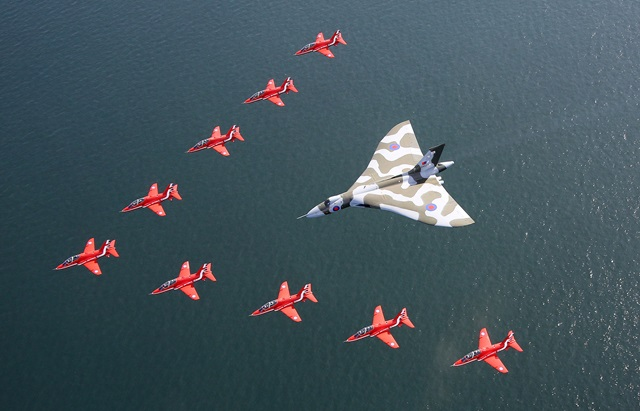
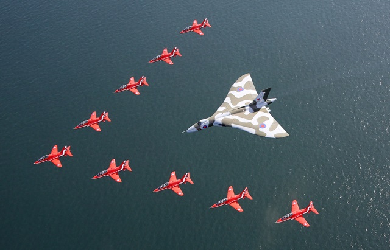

Role
the avro vulcan was the most iconic member of the V-bombers created in for the RAF under B.35/46 inorder to be apart of the Uk brand new nuclear deterrent during the cold war, the vulcan like the over V-bomber was able to deliver nuclear payloads to the around the world and at the time of service was unable to be reached or intercepted by soviet air defences this is partly due to it radical airframe with it impreive delta wing it allowed the aircraft to operate at high speeds and altitudes making one of the mowst impreove and importent parts of britans nuclear triad

 
